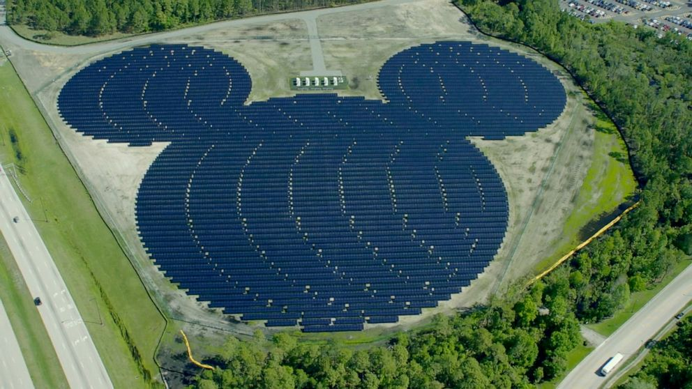

As I have gotten older, I started to reduce the amount of energy I use. If it’s a sunny warm day, I will hang my clothes on the clothesline or ill hang them on a hanging rack. I try to use natural sunlight instead of turning the lights on. I turn off the lights if I leave a room. I don’t leave the tv on if I’m not watching it. All these little energy savings will add up but the main thing with the drier. Without using the drier, the amount of energy used is a lot and in return, there is also a saving on your energy bill. It might not be a lot of money saved but it means that just a small amount of fossil fuel wasn’t burned. In BC we are lucky that about 90% of energy made is through returnable sources but it’s still nice to try to save energy.